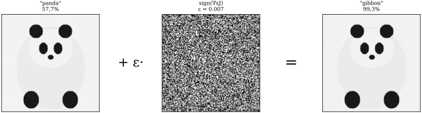

Когда нейросеть устойчива: оценки Липшицевости
Сюжет: когда панда становится гиббоном
В 2014 г. Иэн Гудфеллоу и соавторы опубликовали ставшую знаменитой картинку (рис. 0.10): обычная фотография панды, которую современная нейросеть уверенно опознаёт как «panda» с вероятностью 57{,}7\%. К каждому пикселю прибавлена крошечная, визуально незаметная человеку поправка. На обновлённой картинке сеть теперь уверенно (с вероятностью 99{,}3\%) считает, что видит гиббона.

Этот эффект называется adversarial-атакой и долгое время считался экзотикой. Сейчас понятно: причина в простом числе, которое сопровождает любую функцию — её константе Липшица.
Константа Липшица: формальное определение
Функция f\colon\mathbb{R}^{n}\to\mathbb{R}^{m} называется Липшицевой с константой L>0, если для любых x,y\in\mathbb{R}^{n} выполнено
\tag{0.9} \left\lVert f(x)-f(y) \right\rVert\;\leq\;L\,\left\lVert x-y \right\rVert.
Наименьшее L, для которого (0.9) выполнено, называется константой Липшица функции f и обозначается \mathrm{Lip}(f).
Содержательно \mathrm{Lip}(f) показывает, во сколько раз может усилиться входное возмущение на выходе функции. Если \mathrm{Lip}(f)=L, то малое возмущение \delta на входе может вызвать возмущение до L\cdot\left\lVert \delta \right\rVert на выходе.
Пример. Для линейного отображения f(x)=Wx имеем f(x)-f(y)=W(x-y), откуда \left\lVert f(x)-f(y) \right\rVert\leq \left\lVert W \right\rVert_2\cdot\left\lVert x-y \right\rVert, и константа Липшица — это в точности спектральная норма матрицы W:
\tag{0.10} \mathrm{Lip}(Wx)\;=\;\left\lVert W \right\rVert_2\;=\;\sigma_1(W).
Здесь \sigma_1(W) — наибольшее сингулярное число матрицы W. Вот здесь в нашу историю входит SVD из § 0.3.
Композиция: Липшицева константа цепочки
Если f и g — Липшицевы с константами L_f и L_g, то их композиция f\circ g — тоже Липшицева, причём
\tag{0.11} \mathrm{Lip}(f\circ g)\;\leq\;\mathrm{Lip}(f)\cdot\mathrm{Lip}(g).
Доказательство. \left\lVert f(g(x))-f(g(y)) \right\rVert\leq L_f\left\lVert g(x)-g(y) \right\rVert\leq L_f L_g\left\lVert x-y \right\rVert. \square\square
Применение к нейросети
Возьмём типичную нейросеть глубины K:
f(x)\;=\;\sigma\bigl(W_K\,\sigma(W_{K-1}\,\sigma(\cdots\sigma(W_1 x))\bigr),
где W_i — матрицы весов, \sigma — поэлементная активация (ReLU, сигмоида, и т.п.). Для большинства активаций \mathrm{Lip}(\sigma)\leq 1 (для ReLU и \tanh она равна 1, а для логистической сигмоиды — 1/4). По теореме 0.6:
\;\mathrm{Lip}(f)\;\leq\;\prod_{i=1}^{K}\left\lVert W_i \right\rVert_2\;
Это и есть тот «лишний рычаг», который объясняет уязвимость нейросетей. Если \left\lVert W_i \right\rVert_2 \approx 2 для каждого слоя из K=20 слоёв, то возмущение на входе потенциально усиливается в 2^{20}\approx 10^{6} раз. Невидимая поправка \delta с \left\lVert \delta \right\rVert=10^{-3} может вызвать изменение выхода до 10^{3} — этого хватит, чтобы перебросить классификатор из одного класса в другой.
Как защищаться: спектральная нормализация
Естественная стратегия: после каждого шага обучения нормализовать матрицу W_i так, чтобы \left\lVert W_i \right\rVert_2 = 1. Это и есть метод Spectral Normalization (Миято и соавт., 2018), сделавший обучение генеративных нейросетей (GAN) намного стабильнее.
Технически: на каждом шаге считаем \sigma_1(W) (с помощью одной итерации степенного метода — почти бесплатно!) и заменяем W \mapsto W/\sigma_1(W).
def spectral_normalize(W, n_iter=1):
"""One step of power iteration to estimate sigma_1(W) and rescale."""
u = np.random.randn(W.shape[0])
for _ in range(n_iter):
v = W.T @ u; v /= np.linalg.norm(v)
u = W @ v; u /= np.linalg.norm(u)
sigma_1 = u @ W @ v
return W / sigma_1Связь с устойчивостью в физике. Похожая ситуация хорошо известна в теории динамических систем: если константа Липшица отображения > 1, малое возмущение начального условия экспоненциально нарастает (классический эффект бабочки в погодных моделях). Spectral Normalization можно рассматривать как искусственное гашение этого эффекта.